Show Code
import numpy as np
a = 2 * np.sqrt(6) / 3
print(a)1.6329931618554518Serika Yuzuki
October 10, 2024
\[ \require{physics} \require{mhchem} \require{ams} \]
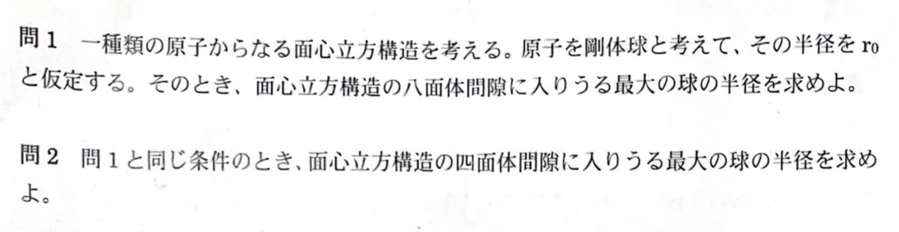
fccの間隙原子については、その原子が入り込む面で考えればいい。８面体は立方体の一面、４面体は斜め切りした時を考えればいい。
八面体間隙の場合は、
\[ \begin{aligned} \sqrt{2} \times 2r_0 &= 2r + 2r_0 \\ r &= \qty(\sqrt{2}-1)r_0 \\ \end{aligned} \]
四面体間隙の場合は、
\[ \begin{aligned} 2r+2r_0 &= \frac{\sqrt{3}}{2} \times 2\sqrt{2}r \\ r &= \qty(\frac{\sqrt{6}}{2}-1)r_0 \\ \end{aligned} \]
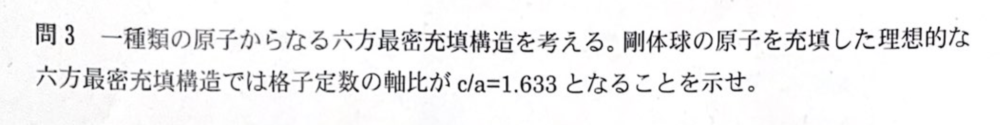
正四面体を上下に重ねた時の高さを求めるだけ
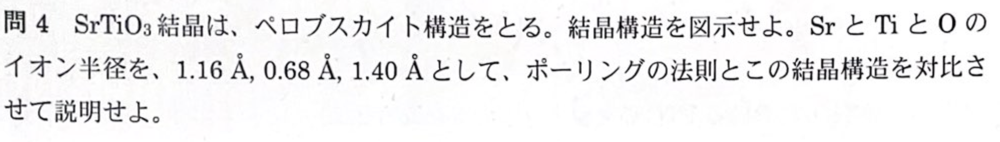
ポーリングの法則についてまとめる。
| 番号 | 内容 |
|---|---|
| 1,2 | \(r_c/r_a\) が安定の範囲にある |
| 3 | \(\text{結合強度}=\sum (\text{陽イオン原子価})/(\text{配位数})=\text{酸化物イオン原子価}\) |
| 4 | 配位多面体の結合は隅から起こる |
ペロブスカイト構造については次の図を参照
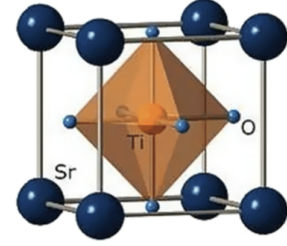
最後にイオン半径比の安定範囲についてまとめる。
| 配位数 | 安定範囲 |
|---|---|
| 4 | 0.225~0.414 |
| 6 | 0.414~0.732 |
| 8 | 0.732~1.0 |
| 12 | 1 |
結合強度の計算は、
\[ \xi = \eval{\frac{3}{12} \times 4}_{\ce{Sr}} + \eval{\frac{3}{6} \times 2}_{\ce{Ti}} = 2 \]
となって、ポーリングの法則にしたがう。おそらくここまで書ければ点数がもらえるのではないかと思う。
次にイオン半径比は、
| 陽イオン | イオン比 | 安定範囲 |
|---|---|---|
| \(\ce{Sr}\) | 0.829 | 1 |
| \(\ce{Ti}\) | 0.52 | 0.414~0.723 |
Tiのイオン半径比は安定範囲にあるが、Srについては安定範囲にない。
ゴールドシュミットの許容因子という講義で出てきたものを使うと、
\[ t=\frac{ (r_{\ce{Sr}} + r_{\ce{O}}) }{ \sqrt{2}(r_{\ce{Ti}} + r_{\ce{O}}) }=0.87 \]
この計算だと、Srの半径が小さく不安定だと判定される。
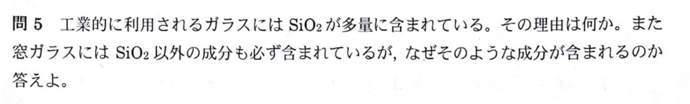
何を答えればいいんだ……？ とりあえず講義で話してたことをまとめた。
ガラスに含まれる理由：
添加物の理由：
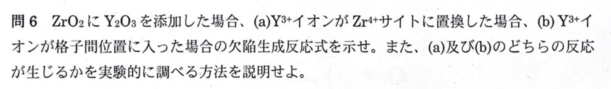
\[ \ce{Y2O3 ->[ZrO2] 2Y_{Zr}^{'} + 3O_O^{\cross} + V_O^{..}} \]
\[ \ce{Y2O3 ->[ZrO2] 2Y_{i}^{...} + \frac{3}{2}O2(g) + 6e^{'}} \]
(b)の場合は反応後に酸素ガスが発生するため、酸素センサーなどを用いて実験すれば良い。
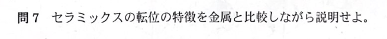
バイエルス応力と、イオン結合の話、滑り系の話でOKと思われる。
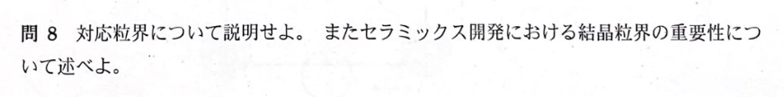
CSLについての話。覚えればいい。
CSL:隣接する結晶粒の格子構造が特定の割合で整合するような粒界
重要性:
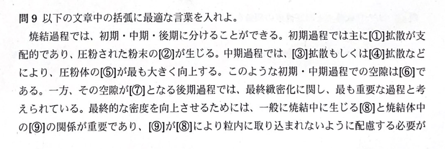
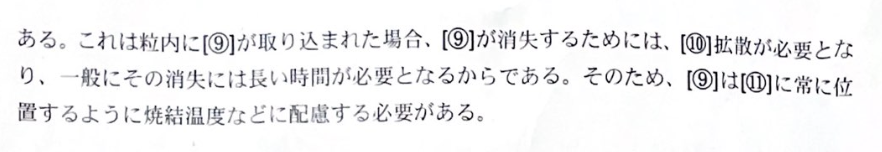
①: 表面, ②: 圧粉体, ③: 粒界, ④: 体, ⑤: 密度, ⑥: オープンポア, ⑦: クローズポア, ⑧: 粒成長, ⑨: ポア, ⑩: 体, ⑪: 粒界
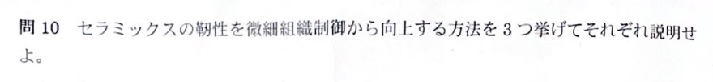
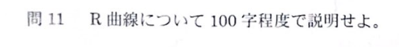
講義で出てきたっけ……？ 記憶にありません。
安定き裂進展時におけるき裂進展量と破壊抵抗値との関係を示す曲線。亀裂進展が始まる初期段階では破壊抵抗が低く、亀裂が進展するにつれて破壊抵抗が増加する場合が多いのが特徴。
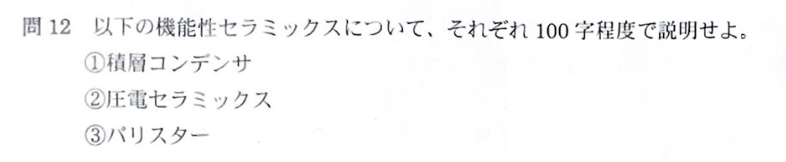
積層コンデンサー：積層構造のセラミックスを用いたコンデンサで、高誘電率材料により高い静電容量を実現。小型・高容量で電子機器に広く使用される。主にチタン酸バリウムが使われる。
圧電セラミックス：機械的変形により電圧を発生させる特性を持つセラミックス。逆に電圧で変形も可能。高感度や精密な制御が求められる用途に適していて、センサー、アクチュエーター、超音波機器などで活用される。
バリスター：電圧が一定値を超えると急激に電気抵抗が下がる非線形抵抗素子。酸化亜鉛が主材料。耐久性や迅速な応答性が重要な電源回路の過電圧保護や雷サージ対策に用いられる。
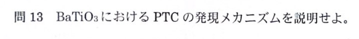
固溶体の焼結の結果粒界ができることで、相転移点以上で電子が界面準位に捕獲されるショットキー障壁が形成されることで電気抵抗が急激に増加する。
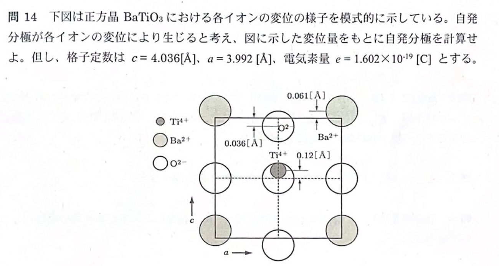
分極モーメントは
\[ \mathbfit{\mu} = q \times \Delta \mathbfit{r} \]
で表される。ここで、\(\Delta \mathbfit{r}\) はずれた距離である。そして、分極 ionic polarizability は
\[ \mathbfit{P} = N \times \mathbfit{\mu} = \frac{\mathbfit{\mu}_{\text{格子内}}}{V_\text{単位体積}} \]
で表される。ここで、\(N\) は単位体積あたりの双極子数である。
この問題ではまず格子内の分極モーメントを求め、次に単位体積で割れば良い。格子自体の体積については、\(V = a^2c\) で求められる。 \(a^2\) は基準にした酸素イオンの間隔で、対称性から考えればわかる。
上向を正とする。
\[ \begin{aligned} \mu = e ( &\eval{\qty{{1_{\text{個}} \times (+4)_{\text{価数}} \times 0.12 [Å]}}}_{\ce{Ti^{4+}}} + \\ &\eval{\qty{{1_{\text{個}} \times (-2)_{\text{価数}} \times -0.036 [Å]}}}_{\ce{O^{2-}}} + \\ &\eval{\qty{{1_{\text{個}} \times (+2)_{\text{価数}} \times 0.061 [Å]}}}_{\ce{Ba^{2+}}} ) \\ &= 1.080 \times 10^{-29} \, \mathrm{C} \cdot \mathrm{m} \\ P &= \frac{\mu}{V} = 1.679 \times 10^{-1} \, \mathrm{C} \cdot \mathrm{m}^{-2} \end{aligned} \]
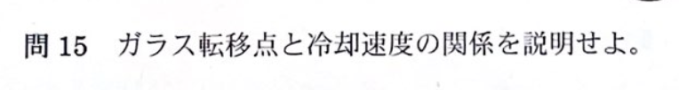
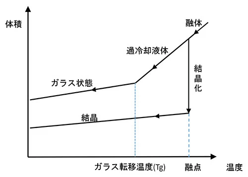
ガラスになる物質を高温からゆっくり冷却すると結晶化するが、急冷すると粘性が増大し融点でも結晶化せず過冷却され、その体積は滑らかに減少し、ガラス転移点に達すと体積変化が急に小さくなる。 \(T_g\) はガラスを特徴づける最も基本的な物性値で、冷却速度が遅い場合は網目が連続的につながっている構造を持ち、その値は高く、冷却速度が速い場合は網目が不連続になって低くなる。
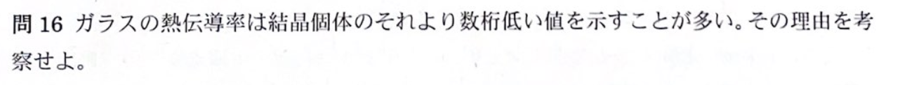
熱伝導率を \(\kappa\) とすると、キャリアの比熱を \(c\) 、音速を \(c\) 、平均自由行程を \(l\) とすると、熱伝導率は
\[ \kappa = \frac{1}{3} cvl \]
と示されている。キャリアの比熱と速度は固体内では変わらないので、 \(l\) が熱伝導率に影響を与える。
ここで、ガラス内部の構造は結晶内部に比べて複雑であり、ある２点の原子A,Bを通る経路同士でキャリアの位相が干渉してしまうため、平均自由行程が短くなる。そのため、熱伝導率が低くなる。
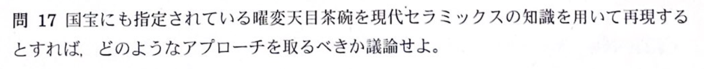
XRD, EDS, IRなどの方法によって使用されている素材の組成を調べることによって、適当な現代の材料を選定する。次に、高精度な焼結技術を用いて、異なる材料、釉薬、焼成条件を変化させながら試作を繰り返し、最適な条件を見つけ出すことが求められる。
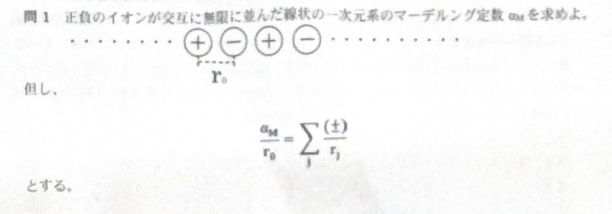
ポテンシャルの話。
\[ \ln(1+x) = x - \frac{x^2}{2} + \frac{x^3}{3} - \cdots \]
\[ V = - \frac{e^2}{4\pi \varepsilon_0 r_0} \times 2 \qty(1 - \frac{1}{2} + \frac{1}{3} - \cdots)= - \frac{e^2}{4\pi \varepsilon_0 r_0} 2\ln 2 \]
以上より \(2\ln 2\) となる。